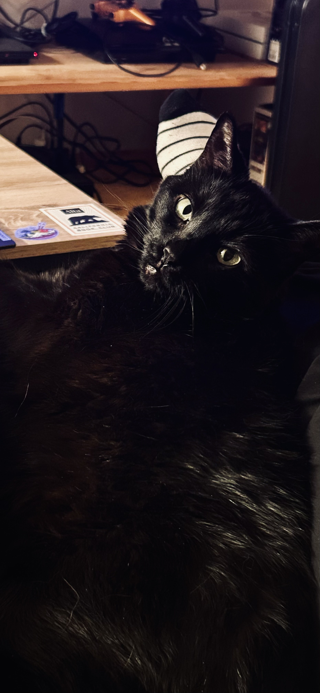
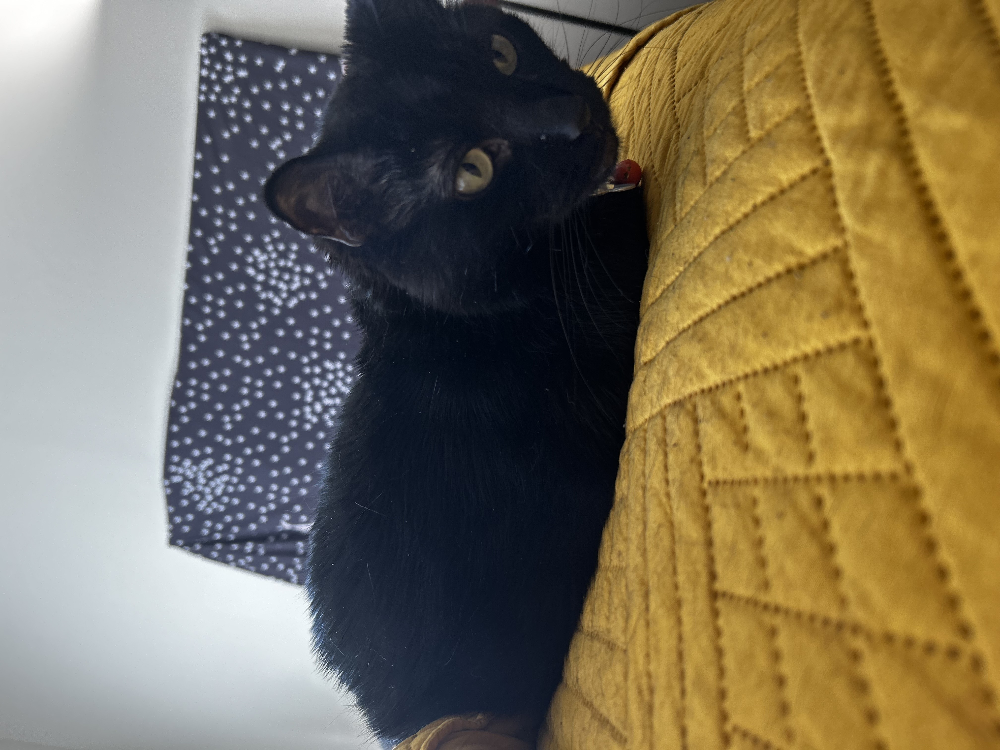

Welcome. I'm Tuesday.
This Site

Mine is a life of much woe. Please take a look around this page, as I use it to store my art and some of my writing.
About Me

I am a ten year old, completely black feline who likes to drive my owner crazy. My hobbies include clawing at the furniture, begging for food, and napping the day away. I am also a talented artist.